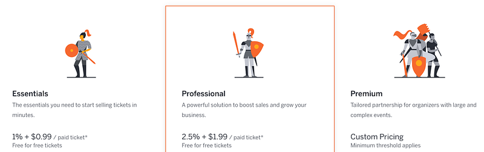
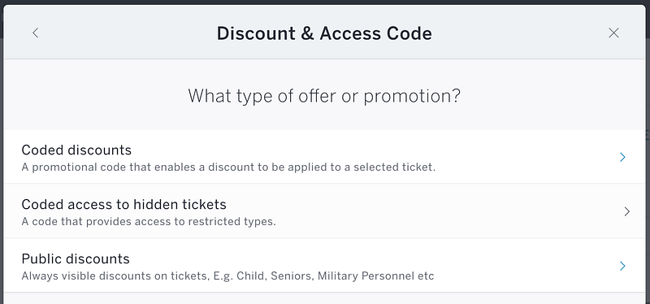

Eventbrite運用所感
Eventbrite運用所感
このところEventbriteを運用を試してみている。
自分が運営しているbuilderscon （もうちょっとしたらCFP+チケット販売を始めるのでウォームアップを始めておいてください！）では来場者へのチケット販売に関して改良を加えていく中で様々なチケッティングサービスを試してみていて、その中で 自分が運営する他の小さなイベントで何回かEventbriteを運用してみているところなので、現時点での所感を記しておく。
なお、以下はEventbriteの”Professional”プランを使っている前提です。手数料や使える機能はプランによって違うので、その辺りもご留意ください。

Eventbrite brings people together through live experiences. Discover events that match your passions, or create your…www.eventbrite.com
欠点
小さいイベントにはToo much
大前提として、「チケットをN枚売って、人が集まれば良い」というだけのイベントや、チケットの料金が安いイベント向けではない。
人が集まれば良いだけのイベントでは正直機能がありすぎて悩んでしまいそうだし、チケットの料金が安いイベントでは手数料が結構重くのしかかってくる。
日本円決済がデフォルトでできない
Eventbrite内の決済システムでは日本円はサポートされてない。このため、日本円で決済したい場合はPayPalと連携する必要がある。
PayPal is the faster, safer way to send money, make an online payment, receive money or set up a merchant account.www.paypal.com
PayPalにする場合、二つほど問題がある。
まず、イベント運営が法人の場合は、PayPal本体も法人アカウントのほうがなにかと都合がいいので、それを申請するのがそれなりに面倒くさいこと。
もう一つは、Eventbriteシステムの外で決済が走るので、Eventbrite手数料は後払いになり、これは手動で支払いを行わないといけない（幸いにも、Eventbriteから請求が来た後、PayPal口座に残っている金額から手数料を支払うのは非常にシンプルな作業だった）
手数料が高い
Eventbriteの手数料は決して安くない。
自分が使っているProfessionalプランの場合、有料チケットの販売量に対して、総額の2.5% + 一枚ごとに$1.99 取られる。
1000円のチケットの場合、25円＋$1.99（面倒くさいので200円と換算しよう）で 225円、すなわち手元には775円残ることになる。もちろんチケットがそれなりに高ければ1枚ごとの手数料の割合は減るので、それなり、という感じになっていくが、決して安いという感じではない。
正直これまで一番気にしていたのはこの手数料の問題だったのだが、後述する利点を考えると大分安い気がしてきた。
日本語UIがない
これは自分には問題ではないのだけど、これで駄目、という方も多いとは思う。
利点
しっかりしたデータ
データとはどういうことか？イベントにはただ人が会場に来ればよい、というイベントと、細やかなパーソナリゼーションを行いたいイベントがある。後者の場合、チケットと個人の結びつけを行う必要があり、これを行うためにはセールスとチケットに紐尽くメタデータの充実が重要となる。
Eventbriteではチケット関連のほぼ全てのデータをAPI経由で取得できる。他のサービスでこれができるところはほとんど存在しない。チケットのデータを取れるということは、運営側で色々と工夫ができるので、パーソナリゼーションするのに非常に役立つ。
Eventbrite brings people together through live experiences. Discover events that match your passions, or create your…www.eventbrite.com
ドキュメントもぼちぼちしっかりしてるし、Webhookとかも使えるし、このAPIの運用費だと思うと手数料も気にならない、というのが正直なところ。
チケット種別の細やかな管理
チケットについての情報管理もそうとう細やか。他のサービスだと値段と枚数しか決められない事も多いが、チケットに関して実に細かい項目が設定できる。
特に「偉い！」と思ったのが、ディスカウントコードの管理。
チケットに対するディスカウントならどこでもできる。ではデータ管理のために一般来場者以外の全ての来場者（スピーカー、スポンサー）にもチケットを発券したい場合はどうなるか。スピーカーやスポンサーには当然課金しないが、無料チケットを一般チケット購入者が見えるところに置きたくはない。
他のサービスでは最悪別のイベントを作って管理するなどの方法しかないが、Eventbriteでならディスカウントコードの管理から、以下の画像の”Coded access to hidden tickets”を使うと、「このコードを持っていないと見えない」チケット種別を作る事ができる。

これならば「この人にしか見せたくない」という情報を管理することができる。
メール機能が秀逸
他のサービスでは「全員に送る」の設定しかなかったりするのだけど、「全員にメールを送る」「特定の人にメールを送る」「特定のチケットの購入者にメールを送る」など、細かい調整ができる。メール送信の予約もできる。
本当はパーソナライズするためにテンプレート処理もさせてほしいけど、さすがにそれはどこのサービスでも無理だとは思う…
というわけで、2018年5月の所感としては、Eventbriteは
- 日本でイベントを運営する分には日本語・日本円の部分だけが辛い
- ただチケットを売れば良い、という以上のイベント向け
- 中規模（数百名〜1000人）程度の有料イベントには向いている
という感想です。